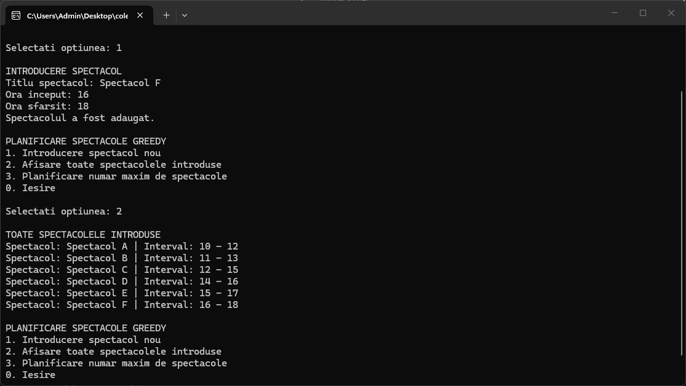

Rezolvarea problemelor
11 probleme rezolvate în limbajul C++. Ultima problemă este cea independentă.
M1. 1 Se consideră numerele naturale din mulțimea {1, 2, 3, ..., n}. Să se determine toate elementele acestei mulțimi, pentru care suma cifrelor este egală cu un număr dat m.
Implementarea în limbajul C++#includeRezultatul execuțieiusing namespace std; int main() { int n, m; cin >> n >> m; int x = 1; while (x <= n) { int temp = x; int s = 0; while (temp > 0) { s += temp % 10; temp /= 10; } if (s == m) { cout << x << " "; } x++; } return 0; }

M2. 20 Problema colorării hărților. Sunt date N țări, precizându-se relațiile de vecinătate. Se cere să se determine o posibilitate de colorare a hărții (cu cele N țări), astfel încât să nu existe țări vecine colorate la fel.
Implementarea în limbajul C++#includeRezultatul execuțieiusing namespace std; int main() { int n; cin >> n; int vecini[51][51]; for (int i = 1; i <= n; i++) { for (int j = 1; j <= n; j++) { cin >> vecini[i][j]; } } int culori[51]; for (int i = 1; i <= n; i++) { culori[i] = 0; } culori[1] = 1; for (int i = 2; i <= n; i++) { int c = 1; while (true) { bool posibil = true; for (int j = 1; j < i; j++) { if (vecini[i][j] == 1 && culori[j] == c) { posibil = false; break; } } if (posibil) { culori[i] = c; break; } c++; } } for (int i = 1; i <= n; i++) { cout << culori[i] << " "; } return 0; }

M3. 32 Fiind date numele a n soldați, ce algoritm vom utiliza pentru a lista toate grupele de câte k soldați? Se știe că într-o grupă, ordinea prezintă importanță. Scrieți un program ce va utiliza algoritmul dat.
Implementarea în limbajul C++#includeRezultatul execuției#include using namespace std; int n, k; string nume[20]; int stiva[20]; bool folosit[20]; void afisare() { for (int i = 1; i <= k; i++) { cout << nume[stiva[i]] << " "; } cout << "\n"; } void backtracking(int pas) { if (pas > k) { afisare(); return; } for (int i = 1; i <= n; i++) { if (!folosit[i]) { stiva[pas] = i; folosit[i] = true; backtracking(pas + 1); folosit[i] = false; } } } int main() { cout << "Introduceti numarul total de soldati (n): "; cin >> n; cout << "Introduceti cati soldati sa fie in grupa (k): "; cin >> k; for (int i = 1; i <= n; i++) { cout << "Introduceti numele soldatului " << i << ": "; cin >> nume[i]; } cout << "\nGrupele generate sunt:\n"; backtracking(1); return 0; }

M3. 14 Anagrame. Se citește un cuvânt cu n litere . Se cere să se tipărească toate anagramele cuvântului citit. Se poate folosi algoritmul pentru generarea permutărilor.
Implementarea în limbajul C++#includeRezultatul execuției#include using namespace std; string cuvant; int n; int stiva[20]; bool folosit[20]; void afisare() { for (int i = 1; i <= n; i++) { cout << cuvant[stiva[i] - 1]; } cout << "\n"; } void backtracking(int k) { if (k > n) { afisare(); return; } for (int i = 1; i <= n; i++) { if (!folosit[i]) { stiva[k] = i; folosit[i] = true; backtracking(k + 1); folosit[i] = false; } } } int main() { cout << "Cuvantul:"; cin >> cuvant; n = cuvant.length(); backtracking(1); return 0; }

M4. 9 Să se genereze toate numerele formate din 5 cifre impare distincte.
Implementarea în limbajul C++#includeRezultatul execuțieiusing namespace std; int cifre[5] = { 1, 3, 5, 7, 9 }; int stiva[10]; bool folosit[10]; void afisare() { for (int i = 1; i <= 5; i++) { cout << cifre[stiva[i] - 1]; } cout << " "; } void backtracking(int pas) { if (pas > 5) { afisare(); return; } for (int i = 1; i <= 5; i++) { if (!folosit[i]) { stiva[pas] = i; folosit[i] = true; backtracking(pas + 1); folosit[i] = false; } } } int main() { int pornire; cout << "Apasati tasta 1 si Enter pentru a genera numerele: "; cin >> pornire; if (pornire == 1) { cout << "Numerele generate sunt:\n"; backtracking(1); cout << "\n"; } return 0; }

M5. 6 Utilizând metoda desparte și stăpânește: a) Să se determine produsul a n numere întregi; b) Să se determine maximul (minimul) a n numere întregi; c) Să se caute o valoare într-un vector. Dacă se găsește se va afișa poziția pe care s-a găsit, altfel se va afișa mesajul ”Nu exista așa valoare”; d) Să se caute o valoare într-un vector ordonat crescător; e) Să se numere câte valori sunt egale cu x dintr-un șir de numere întregi citite.
Implementarea în limbajul C++#includeRezultatul execuțieiusing namespace std; int n, v[100]; int produs(int i, int j) { if (i == j) { return v[i]; } int m = (i + j) / 2; int p1 = produs(i, m); int p2 = produs(m + 1, j); return p1 * p2; } int maxim(int i, int j) { if (i == j) { return v[i]; } int m = (i + j) / 2; int max1 = maxim(i, m); int max2 = maxim(m + 1, j); if (max1 > max2) { return max1; } return max2; } int cauta_neordonat(int i, int j, int x) { if (i == j) { if (v[i] == x) { return i; } return -1; } int m = (i + j) / 2; int poz1 = cauta_neordonat(i, m, x); if (poz1 != -1) { return poz1; } return cauta_neordonat(m + 1, j, x); } int cauta_ordonat(int i, int j, int x) { if (i > j) { return -1; } int m = (i + j) / 2; if (v[m] == x) { return m; } if (v[m] > x) { return cauta_ordonat(i, m - 1, x); } return cauta_ordonat(m + 1, j, x); } int numara_x(int i, int j, int x) { if (i == j) { if (v[i] == x) { return 1; } return 0; } int m = (i + j) / 2; int ct1 = numara_x(i, m, x); int ct2 = numara_x(m + 1, j, x); return ct1 + ct2; } int main() { cout << "Introduceti numarul de elemente (n): "; cin >> n; for (int i = 1; i <= n; i++) { cout << "v[" << i << "]= "; cin >> v[i]; } int val; cout << "Introduceti valoarea cautata (x): "; cin >> val; cout << "a) Produsul elementelor: " << produs(1, n) << "\n"; cout << "b) Maximul din vector: " << maxim(1, n) << "\n"; int poz_c = cauta_neordonat(1, n, val); cout << "c) Cautare in vector neordonat: "; if (poz_c != -1) { cout << "Gasit pe pozitia " << poz_c << "\n"; } else { cout << "Nu exista asa valoare\n"; } int poz_d = cauta_ordonat(1, n, val); cout << "d) Cautare in vector ordonat: "; if (poz_d != -1) { cout << "Gasit pe pozitia " << poz_d << "\n"; } else { cout << "Nu exista asa valoare\n"; } cout << "e) Numarul de aparitii ale lui x: " << numara_x(1, n, val) << "\n"; return 0; }

M6. 7 Problema care urmează prezintă o modalitate de compactare a unui fișier oarecare (de date, executabil, etc.). După cum se știe, fișierul este reținut pe suport ca o succesiune de 0 și 1. Noi dispunem de un set de m secvențe de 0 și 1 din care nu lipsesc secvența care îl conține numai pe 0 și secvența care îl conține numai pe 1. Se cere să găsim o descompunere a șirului de 0 și 1 care alcătuiește fișierul într-un număr de minim de secvențe din cele m. Dacă rezolvăm această problemă, putem înlocui secvența cu o adresă și în acest fel fișierul va deveni o succesiune de adrese (în cazul existenței unor secvențe lungi se realizează economia de suport). Exemplu: Pentru m=6, secvențele sunt: 1. 0 2. 1 3. 0 0 1 4. 1 0 0 5. 1 1 1 6. 1 0 1 Fișierul este: 100111001 Se folosesc secvențele 4 5 și 3.Z
Implementarea în limbajul C++#includeRezultatul execuției#include using namespace std; int main() { int m; cout << "Introduceti numarul de secvente (m): "; cin >> m; string secvente[101]; for (int i = 1; i <= m; i++) { cout << "Secventa " << i << ": "; cin >> secvente[i]; } string fisier; cout << "Introduceti sirul fisierului: "; cin >> fisier; int n = fisier.length(); int dp[1005]; int tata[1005]; int index_secventa[1005]; dp[0] = 0; for (int i = 1; i <= n; i++) { dp[i] = 999999; } for (int i = 0; i < n; i++) { if (dp[i] != 999999) { for (int s = 1; s <= m; s++) { string secv = secvente[s]; int lungime = secv.length(); if (i + lungime <= n) { bool potrivire = true; for (int j = 0; j < lungime; j++) { if (fisier[i + j] != secv[j]) { potrivire = false; break; } } if (potrivire) { if (dp[i] + 1 < dp[i + lungime]) { dp[i + lungime] = dp[i] + 1; tata[i + lungime] = i; index_secventa[i + lungime] = s; } } } } } } cout << "Numarul minim de secvente utilizate: " << dp[n] << "\n"; cout << "Secventele folosite (in ordine inversa): "; int curent = n; while (curent > 0) { cout << index_secventa[curent] << " "; curent = tata[curent]; } cout << "\n"; return 0; }

M6. 20 Problema Rucsacului. Un camion poate transporta T tone de mobilă. Există n piese de mobilă, fiecare caracterizată de greutatea G[i] și de valoarea V[i] adusă de transportarea sa. Să se decidă ce piese de mobilă vor fi transportate pentru a aduce o valoare maximă (soluție optimă). Exemplu: Fie cantitatea maximă admisă T = 10, și un număr de piese de mobilă din care putem alege egal cu 6. Piesele de mobilă sunt descrise de perechi de forma (greutate, valoare), după cum urmează: (3, 7), (3, 4), (1, 2), (1, 9), (2, 4), (1, 5). Profitul maxim pe care îl putem obține este 29 și acesta se realizează dacă vom transporta obiectele de mobilier cu indecșii 1, 2, 4, 5 și 6.
Implementarea în limbajul C++#includeRezultatul execuțieiusing namespace std; int main() { int n, t; cout << "Introduceti numarul de piese (n): "; cin >> n; cout << "Introduceti capacitatea camionului (T): "; cin >> t; int g[100], v[100]; for (int i = 1; i <= n; i++) { cout << "Greutatea piesei " << i << ": "; cin >> g[i]; cout << "Valoarea piesei " << i << ": "; cin >> v[i]; } int dp[101][101]; for (int i = 0; i <= n; i++) { for (int j = 0; j <= t; j++) { dp[i][j] = 0; } } for (int i = 1; i <= n; i++) { for (int j = 0; j <= t; j++) { if (g[i] <= j) { int varianta1 = dp[i - 1][j]; int varianta2 = dp[i - 1][j - g[i]] + v[i]; if (varianta1 > varianta2) { dp[i][j] = varianta1; } else { dp[i][j] = varianta2; } } else { dp[i][j] = dp[i - 1][j]; } } } cout << "Profitul maxim este: " << dp[n][t] << "\n"; cout << "Piesele alese au indecsii: "; int i = n; int j = t; while (i > 0 && j > 0) { if (dp[i][j] != dp[i - 1][j]) { cout << i << " "; j = j - g[i]; } i--; } cout << "\n"; return 0; }

7. Pacientii unui medic de familie Cunoscandu-se informatii despre pacientii unui medic, despre bolile diagnosticate de catre acesta si medicamentele prescrise, sa se scrie un program care va ajuta medicul in desfasurarea activitatii sale. Operatii cerute: 1. introducerea unui nou pacient; 2. afisarea tuturor pacientilor; 3. clasarea pacientilor in pacientii varstnici, respectiv tineri; 4. determinarea numarului de pacienti care sufera de o anumita boala; 5. afisarea pacientilor carora li s-a prescris acelasi tratament; 6. afisarea pacientilor cu un numar de retete/luna mai mare decat un numar dat; 7. determinarea numarului de medicamente prescrise de un anumit tip dat; 8. determinarea pacientilor in functie de domeniul de activitate.
Implementarea în limbajul C#
using System;
namespace CabinetMedic
{
class Pacient
{
public string nume_prenume { get; set; }
public int varsta { get; set; }
public string boala { get; set; }
public string tratament { get; set; }
public int retete_luna { get; set; }
public string tip_medicament { get; set; }
public string domeniu_activitate { get; set; }
public Pacient(string nume_prenume, int varsta, string boala, string tratament, int retete_luna, string tip_medicament, string domeniu_activitate)
{
this.nume_prenume = nume_prenume;
this.varsta = varsta;
this.boala = boala;
this.tratament = tratament;
this.retete_luna = retete_luna;
this.tip_medicament = tip_medicament;
this.domeniu_activitate = domeniu_activitate;
}
public void afisare()
{
Console.WriteLine($"Pacient: {nume_prenume} | Varsta: {varsta} ani | Domeniu: {domeniu_activitate}");
Console.WriteLine($"Boala: {boala} | Tratament: {tratament} | Tip medicament: {tip_medicament} | Retete/luna: {retete_luna}");
}
}
internal class Program
{
static Pacient[] pacienti = new Pacient[100];
static int nr_pacienti = 0;
static void Main(string[] args)
{
pacienti[nr_pacienti++] = new Pacient("Ionescu Vasile", 68, "Hipertensiune", "Pastile Tensiune", 2, "Cardiovascular", "Pensionar");
pacienti[nr_pacienti++] = new Pacient("Popescu Elena", 22, "Gripa", "Antiviral", 1, "Antiviral", "Educatie");
pacienti[nr_pacienti++] = new Pacient("Rotaru Dan", 71, "Diabet", "Insulina", 3, "Diabet", "Pensionar");
bool rulare = true;
while (rulare)
{
Console.WriteLine("\nCABINET MEDIC DE FAMILIE");
Console.WriteLine("1. Introducere pacient nou");
Console.WriteLine("2. Afisare toti pacientii");
Console.WriteLine("3. Clasare pacienti (varstnici / tineri)");
Console.WriteLine("4. Numar pacienti cu o anumita boala");
Console.WriteLine("5. Afisare pacienti cu acelasi tratament");
Console.WriteLine("6. Afisare pacienti cu numar de retete mai mare decat limita");
Console.WriteLine("7. Numar medicamente prescrise de un anumit tip");
Console.WriteLine("8. Afisare pacienti dupa domeniul de activitate");
Console.WriteLine("0. Iesire");
Console.Write("\nSelectati optiunea: ");
string optiune = Console.ReadLine();
switch (optiune)
{
case "1":
introducere_pacient();
break;
case "2":
afisare_toti();
break;
case "3":
clasare_varsta();
break;
case "4":
numar_boala();
break;
case "5":
afisare_tratament_identic();
break;
case "6":
afisare_retete_limita();
break;
case "7":
numar_tip_medicament();
break;
case "8":
afisare_domeniu();
break;
case "0":
rulare = false;
continue;
default:
Console.WriteLine("Optiune invalida!");
break;
}
Console.WriteLine("\nApasati o tasta pentru a continua...");
Console.ReadKey();
}
}
static void introducere_pacient()
{
Console.WriteLine("\nINTRODUCERE PACIENT");
if (nr_pacienti >= 100)
{
Console.WriteLine("Memorie plina!");
return;
}
Console.Write("Nume si prenume: ");
string nume = Console.ReadLine();
Console.Write("Varsta: ");
int varsta = int.Parse(Console.ReadLine());
Console.Write("Boala diagnosticata: ");
string boala = Console.ReadLine();
Console.Write("Tratament prescris: ");
string tratament = Console.ReadLine();
Console.Write("Numar retete/luna: ");
int retete = int.Parse(Console.ReadLine());
Console.Write("Tip medicament: ");
string tip_med = Console.ReadLine();
Console.Write("Domeniu de activitate: ");
string domeniu = Console.ReadLine();
pacienti[nr_pacienti++] = new Pacient(nume, varsta, boala, tratament, retete, tip_med, domeniu);
Console.WriteLine("Pacientul a fost adaugat cu succes.");
}
static void afisare_toti()
{
Console.WriteLine("\nLISTA TUTUROR PACIENTILOR");
if (nr_pacienti == 0)
{
Console.WriteLine("Nu exista pacienti inregistrati.");
return;
}
for (int i = 0; i < nr_pacienti; i++)
{
pacienti[i].afisare();
}
}
static void clasare_varsta()
{
Console.WriteLine("\nCLASARE PACIENTI");
Console.WriteLine("PACIENTI TINERI (sub 60 de ani):");
for (int i = 0; i < nr_pacienti; i++)
{
if (pacienti[i].varsta < 60)
{
pacienti[i].afisare();
}
}
Console.WriteLine("\nPACIENTI VARSTNICI (60 de ani sau peste):");
for (int i = 0; i < nr_pacienti; i++)
{
if (pacienti[i].varsta >= 60)
{
pacienti[i].afisare();
}
}
}
static void numar_boala()
{
Console.WriteLine("\nNUMAR PACIENTI DUPA BOALA");
Console.Write("Introduceti denumirea bolii: ");
string boala_cautata = Console.ReadLine();
int contor = 0;
for (int i = 0; i < nr_pacienti; i++)
{
if (pacienti[i].boala.Equals(boala_cautata, StringComparison.OrdinalIgnoreCase))
{
contor++;
}
}
Console.WriteLine($"Numarul de pacienti care sufera de {boala_cautata} este: {contor}");
}
static void afisare_tratament_identic()
{
Console.WriteLine("\nPACIENTI CU ACELASI TRATAMENT");
Console.Write("Introduceti denumirea tratamentului: ");
string tratament_cautat = Console.ReadLine();
for (int i = 0; i < nr_pacienti; i++)
{
if (pacienti[i].tratament.Equals(tratament_cautat, StringComparison.OrdinalIgnoreCase))
{
pacienti[i].afisare();
}
}
}
static void afisare_retete_limita()
{
Console.WriteLine("\nFILTRARE DUPA NUMAR RETETE/LUNA");
Console.Write("Introduceti numarul limita de retete: ");
int limita = int.Parse(Console.ReadLine());
Console.WriteLine($"Pacientii cu mai mult de {limita} retete pe luna:");
for (int i = 0; i < nr_pacienti; i++)
{
if (pacienti[i].retete_luna > limita)
{
pacienti[i].afisare();
}
}
}
static void numar_tip_medicament()
{
Console.WriteLine("\nNUMAR MEDICAMENTE DUPA TIP");
Console.Write("Introduceti tipul de medicament (ex: Antiviral): ");
string tip_cautat = Console.ReadLine();
int total_medicamente = 0;
for (int i = 0; i < nr_pacienti; i++)
{
if (pacienti[i].tip_medicament.Equals(tip_cautat, StringComparison.OrdinalIgnoreCase))
{
total_medicamente += pacienti[i].retete_luna;
}
}
Console.WriteLine($"Numarul total de medicamente prescrise de tipul {tip_cautat} este: {total_medicamente}");
}
static void afisare_domeniu()
{
Console.WriteLine("\nPACIENTI DUPA DOMENIUL DE ACTIVITATE");
Console.Write("Introduceti domeniul de activitate: ");
string domeniu_cautat = Console.ReadLine();
for (int i = 0; i < nr_pacienti; i++)
{
if (pacienti[i].domeniu_activitate.Equals(domeniu_cautat, StringComparison.OrdinalIgnoreCase))
{
pacienti[i].afisare();
}
}
}
}
}
Rezultatul execuției

17. Firma de protectie si paza In cadrul unei agentii de protectie si paza, se cunosc urmatoarele informatii despre locatiile, respective persoanele pentru care se ofera servicii de paza si protectie: nume societate; adresa competa; persoanele cu parola si cod pentru operatiile de armare/dezarmare; tipul de contract; distanta pana la cea mai apropiata celula; istoricul interventiilor la respectiva adresa. Informatiile despre clienti sunt urmatoarele: 1. nume si prenume; 2. numar si serie carte de identitate; 3. adresa; 4. numar de telefon; 5. functia in cadrul societatii; Operatii cerute sunt: 1. introducere date; 2. afisare locatiilor sortate dupa nume; 3. adaugare a unei noi locatii impreuna cu toate datele aferente persoanelor care utilizeaza noua locatie; 4. afisare locatiilor care au sediul intr-un anumit perimetru (de exemplu toate locatiile din cartierul 1 Mai); 5. afisare persoanelor care au avut acces, in timp, la datele corespunzatoare unei locatii; 6. simularea unei actiuni la o locatie specificata cu determinarea timpilor de reactie; 7. simularea unei actiuni la fiecare din locatiile protejate cu determinarea timpilor de reactie;
Implementarea în limbajul C#
using System;
namespace AgentiePaza
{
class Client
{
public string nume_prenume { get; set; }
public string id_serie_numar { get; set; }
public string adresa_client { get; set; }
public string telefon { get; set; }
public string functie { get; set; }
public Client(string nume_prenume, string id_serie_numar, string adresa_client, string telefon, string functie)
{
this.nume_prenume = nume_prenume;
this.id_serie_numar = id_serie_numar;
this.adresa_client = adresa_client;
this.telefon = telefon;
this.functie = functie;
}
}
class Locatie
{
public string nume_societate { get; set; }
public string adresa_completa { get; set; }
public string persoana_parola { get; set; }
public string persoana_cod { get; set; }
public string tip_contract { get; set; }
public double distanta_celula { get; set; }
public int numar_interventii { get; set; }
public Client responsabil { get; set; }
public Locatie(string nume_societate, string adresa_completa, string persoana_parola, string persoana_cod, string tip_contract, double distanta_celula, int numar_interventii, Client responsabil)
{
this.nume_societate = nume_societate;
this.adresa_completa = adresa_completa;
this.persoana_parola = persoana_parola;
this.persoana_cod = persoana_cod;
this.tip_contract = tip_contract;
this.distanta_celula = distanta_celula;
this.numar_interventii = numar_interventii;
this.responsabil = responsabil;
}
public void afisare()
{
Console.WriteLine($"Societate: {nume_societate} | Adresa: {adresa_completa} | Contract: {tip_contract}");
Console.WriteLine($"Parola: {persoana_parola} | Cod: {persoana_cod} | Distanta: {distanta_celula} km | Interventii: {numar_interventii}");
Console.WriteLine($"Client responsabil: {responsabil.nume_prenume} | ID: {responsabil.id_serie_numar} | Tel: {responsabil.telefon} | Functie: {responsabil.functie}");
}
}
internal class Program
{
static Locatie[] locatii = new Locatie[100];
static int nr_locatii = 0;
static void Main(string[] args)
{
Client c1 = new Client("Popescu Ion", "SP123456", "Str. Florilor 5", "068123456", "Director");
locatii[nr_locatii++] = new Locatie("TehnoSRL", "Cartierul 1 Mai, Str. Noua 1", "secret123", "4455", "Premium", 2.5, 4, c1);
Client c2 = new Client("Ionescu Dan", "SP654321", "Str. Pacii 12", "079123456", "Manager");
locatii[nr_locatii++] = new Locatie("AutoGrup", "Cartierul Botanica, Str. Veche 9", "pass987", "1122", "Standard", 5.1, 1, c2);
bool rulare = true;
while (rulare)
{
Console.WriteLine("\n=== AGENTIE DE PAZA SI PROTECTIE ===");
Console.WriteLine("1. Introducere date / Adaugare locatie noua cu persoane");
Console.WriteLine("2. Afisare locatii sortate dupa nume");
Console.WriteLine("3. Afisare locatii dintr-un anumit perimetru");
Console.WriteLine("4. Afisare persoane cu acces la datele unei locatii");
Console.WriteLine("5. Simulare actiune la o locatie (timp reactie)");
Console.WriteLine("6. Simulare actiune la toate locatiile (timpi reactie)");
Console.WriteLine("0. Iesire");
Console.Write("\nSelectati optiunea: ");
string optiune = Console.ReadLine();
switch (optiune)
{
case "1":
introducere_date();
break;
case "2":
sortare_nume();
break;
case "3":
afisare_perimetru();
break;
case "4":
afisare_persoane_acces();
break;
case "5":
simulare_locatie_specifica();
break;
case "6":
simulare_toate_locatiile();
break;
case "0":
rulare = false;
continue;
default:
Console.WriteLine("Optiune invalida!");
break;
}
Console.WriteLine("\nApasati o tasta");
Console.ReadKey();
}
}
static void introducere_date()
{
Console.WriteLine("\nINTRODUCERE DATE LOCATIE");
if (nr_locatii >= 100)
{
Console.WriteLine("Memorie plina!");
return;
}
Console.Write("Nume societate: ");
string nume_soc = Console.ReadLine();
Console.Write("Adresa completa: ");
string adr_comp = Console.ReadLine();
Console.Write("Persoana parola: ");
string parola = Console.ReadLine();
Console.Write("Persoana cod: ");
string cod = Console.ReadLine();
Console.Write("Tip contract: ");
string contract = Console.ReadLine();
Console.Write("Distanta pana la celula (km): ");
double dist = double.Parse(Console.ReadLine());
Console.Write("Istoric interventii (numar): ");
int interv = int.Parse(Console.ReadLine());
Console.WriteLine("\nDATE CLIENT RESPONSABIL");
Console.Write("Nume si prenume client: ");
string nume_cl = Console.ReadLine();
Console.Write("Numar si serie buletin: ");
string id_buletin = Console.ReadLine();
Console.Write("Adresa client: ");
string adr_cl = Console.ReadLine();
Console.Write("Numar telefon: ");
string tel = Console.ReadLine();
Console.Write("Functia in societate: ");
string func = Console.ReadLine();
Client c = new Client(nume_cl, id_buletin, adr_cl, tel, func);
locatii[nr_locatii++] = new Locatie(nume_soc, adr_comp, parola, cod, contract, dist, interv, c);
Console.WriteLine("Locatia si datele clientului au fost salvate.");
}
static void sortare_nume()
{
Console.WriteLine("\n LOCATII SORTATE DUPA NUME");
for (int i = 0; i < nr_locatii - 1; i++)
{
for (int j = i + 1; j < nr_locatii; j++)
{
if (string.Compare(locatii[i].nume_societate, locatii[j].nume_societate, StringComparison.OrdinalIgnoreCase) > 0)
{
Locatie aux = locatii[i];
locatii[i] = locatii[j];
locatii[j] = aux;
}
}
}
for (int i = 0; i < nr_locatii; i++)
{
locatii[i].afisare();
}
}
static void afisare_perimetru()
{
Console.WriteLine("\nAFISARE PERIMETRU");
Console.Write("Introduceti perimetrul cautat (ex: Cartierul 1 Mai): ");
string perimetru = Console.ReadLine();
for (int i = 0; i < nr_locatii; i++)
{
if (locatii[i].adresa_completa.IndexOf(perimetru, StringComparison.OrdinalIgnoreCase) >= 0)
{
locatii[i].afisare();
}
}
}
static void afisare_persoane_acces()
{
Console.WriteLine("\nPERSOANE CU ACCES LA DATE");
Console.Write("Introduceti numele societatii: ");
string nume_soc = Console.ReadLine();
for (int i = 0; i < nr_locatii; i++)
{
if (locatii[i].nume_societate.Equals(nume_soc, StringComparison.OrdinalIgnoreCase))
{
Console.WriteLine($"Nume client responsabil: {locatii[i].responsabil.nume_prenume}");
Console.WriteLine($"Persoana detinatoare parola/cod: {locatii[i].responsabil.nume_prenume} (Cod: {locatii[i].persoana_cod})");
}
}
}
static void simulare_locatie_specifica()
{
Console.WriteLine("\nSIMULARE ALARMA LOCATIE");
Console.Write("Introduceti numele societatii pentru simulare: ");
string nume_soc = Console.ReadLine();
for (int i = 0; i < nr_locatii; i++)
{
if (locatii[i].nume_societate.Equals(nume_soc, StringComparison.OrdinalIgnoreCase))
{
double timp = locatii[i].distanta_celula * 1.5 + 2;
Console.WriteLine($"Alarma declansata la {locatii[i].nume_societate}!");
Console.WriteLine($"Timp estimat de reactie (interventie): {timp} minute.");
return;
}
}
Console.WriteLine("Locatia nu a fost gasita.");
}
static void simulare_toate_locatiile()
{
Console.WriteLine("\n SIMULARE ALARMA TOATE LOCATIILE");
for (int i = 0; i < nr_locatii; i++)
{
double timp = locatii[i].distanta_celula * 1.5 + 2;
Console.WriteLine($"Societate: {locatii[i].nume_societate} | Timp reactie: {timp} minute.");
}
}
}
}
Rezultatul execuției

M2. 1 Problema spectacolelor. Într-o sală într-o zi trebuie planificate n spectacole. Pentru fiecare spectacol se cunoaște intervalul în care se desfășoară: (început, sfârșit). Se cere să se planifice un număr maxim de spectacole astfel încât să nu se suprapună.
Implementarea în limbajul C++O #includeRezultatul execuției#include using namespace std; struct Spectacol { string titlu; int inceput; int sfarsit; }; Spectacol spectacole[100]; int nr_spectacole = 0; void introducere_spectacol() { cout << "\nINTRODUCERE SPECTACOL\n"; if (nr_spectacole >= 100) { cout << "Memorie plina!\n"; return; } cout << "Titlu spectacol: "; getline(cin, spectacole[nr_spectacole].titlu); cout << "Ora inceput: "; cin >> spectacole[nr_spectacole].inceput; cout << "Ora sfarsit: "; cin >> spectacole[nr_spectacole].sfarsit; cin.ignore(); nr_spectacole++; cout << "Spectacolul a fost adaugat.\n"; } void afisare_toate() { cout << "\nTOATE SPECTACOLELE INTRODUSE\n"; if (nr_spectacole == 0) { cout << "Nu exista spectacole.\n"; return; } for (int i = 0; i < nr_spectacole; i++) { cout << "Spectacol: " << spectacole[i].titlu << " | Interval: " << spectacole[i].inceput << " - " << spectacole[i].sfarsit << "\n"; } } void planificare_greedy() { cout << "\nPLANIFICARE OPTIMA GREEDY\n"; if (nr_spectacole == 0) { cout << "Nu exista spectacole pentru planificare.\n"; return; } for (int i = 0; i < nr_spectacole - 1; i++) { for (int j = i + 1; j < nr_spectacole; j++) { if (spectacole[i].sfarsit > spectacole[j].sfarsit) { Spectacol aux = spectacole[i]; spectacole[i] = spectacole[j]; spectacole[j] = aux; } } } cout << "Spectacolele selectate sunt:\n"; Spectacol ultimul = spectacole[0]; cout << "Spectacol: " << ultimul.titlu << " | Interval: " << ultimul.inceput << " - " << ultimul.sfarsit << "\n"; int contor = 1; for (int i = 1; i < nr_spectacole; i++) { if (spectacole[i].inceput >= ultimul.sfarsit) { cout << "Spectacol: " << spectacole[i].titlu << " | Interval: " << spectacole[i].inceput << " - " << spectacole[i].sfarsit << "\n"; ultimul = spectacole[i]; contor++; } } cout << "\nNumar maxim de spectacole ce nu se suprapun: " << contor << "\n"; } int main() { spectacole[nr_spectacole++] = Spectacol{ "Spectacol A", 10, 12 }; spectacole[nr_spectacole++] = Spectacol{ "Spectacol B", 11, 13 }; spectacole[nr_spectacole++] = Spectacol{ "Spectacol C", 12, 15 }; spectacole[nr_spectacole++] = Spectacol{ "Spectacol D", 14, 16 }; spectacole[nr_spectacole++] = Spectacol{ "Spectacol E", 15, 17 }; int rulare = 1; while (rulare == 1) { cout << "\nPLANIFICARE SPECTACOLE GREEDY\n"; cout << "1. Introducere spectacol nou\n"; cout << "2. Afisare toate spectacolele introduse\n"; cout << "3. Planificare numar maxim de spectacole\n"; cout << "0. Iesire\n"; cout << "\nSelectati optiunea: "; string optiune; cin >> optiune; cin.ignore(); if (optiune == "1") { introducere_spectacol(); } else if (optiune == "2") { afisare_toate(); } else if (optiune == "3") { planificare_greedy(); } else if (optiune == "0") { rulare = 0; } else { cout << "Optiune invalida!\n"; } } return 0; }
